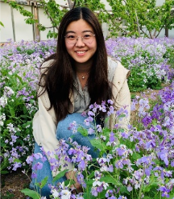
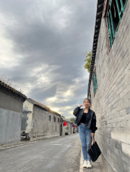
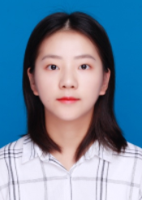
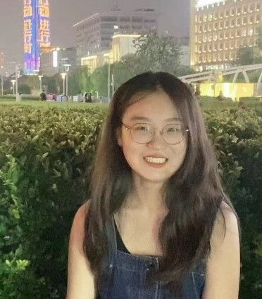
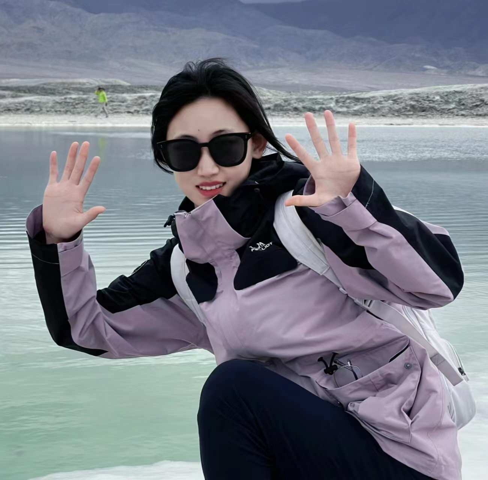
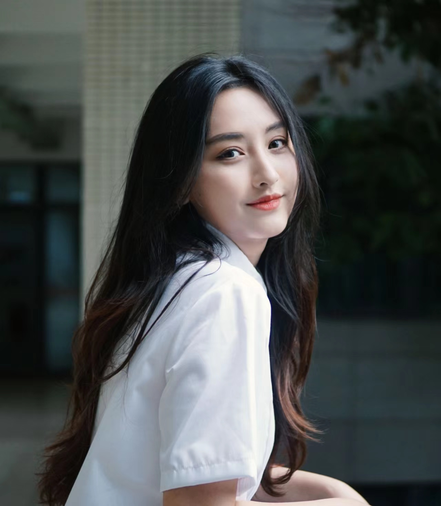
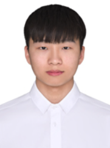
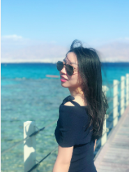
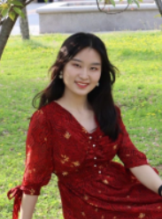

首页
成员介绍
教授
博士后
博士
硕士
客座成员
已毕业学生
研究方向
活动交流
培训课题
在线工具
加入我们
教授
林涛
博士后

耿晓琳
王妍
博士
李红伟

张月美

杨琴琴
苏晓
硕士

刘芸
李雪成
杨泰来

丛琰卿

韩佳希
客座成员

王宝安
陈克
已毕业学生

梁斌
杨俊伟
李国丽

周顺媛


 首页
首页 成员介绍
成员介绍 研究方向
研究方向 活动交流
活动交流 培训课题
培训课题 在线工具
在线工具 加入我们
加入我们